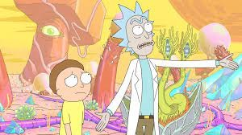
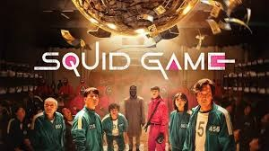

Following the recent earthquakes, would you like to donate towards helping with the emergency relief efforts?
Please enter the amount you have decided to donate (or have convinced others to donate?): £
(I know times are tough, if you can't donate anything, just enter 0 and vote anyway!)
| Rick and Morty | Squid Game | Chainsaw Man |
|---|---|---|
|  |  | |
| Vote for Rick and Morty! |
(The links take you directly to a reputable charity website addressing the Turkey-Syria earthquake crisis, and allow me to record the total pledge for each option.)